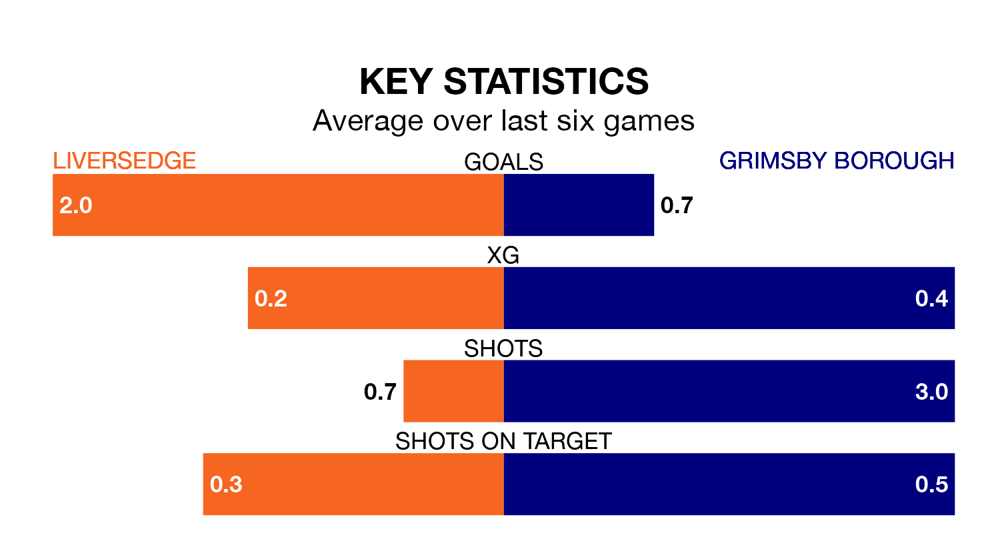

Liversedge are heavy favourites to keep all three points at home in Tuesday's late kick-off against Grimsby Borough.
Liversedge, who sit ninth in the Northern Premier League Division One East with 14 games played, are priced at 1.6 to seal victory.
Sitting 10 places and eight points behind them in the table, Grimsby are 4.6 to win with *Betting Company*, while the draw is at 4.0.
Liversedge are in reasonable form in the Northern Premier League Division One East, with four wins and two losses from their last six games.
With no wins and six losses over that period, Grimsby's form is much worse – they have taken no points from 18, compared to the home side's 12.
With 19 goals in 15 games so far this season, Borough are the league's joint-third-lowest scorers with 1.3 goals per game. And they are conceding more than average, letting in 28 goals at a rate of 1.9 per game.
Liversedge, meanwhile, are average scorers, with 1.6 goals per game. They have conceded 1.2 goals per game.
Liversedge's last match was on November 28, a 2-1 loss against Pontefract Collieries.
Grimsby lost 2-0 against Consett last time out, on Saturday.
